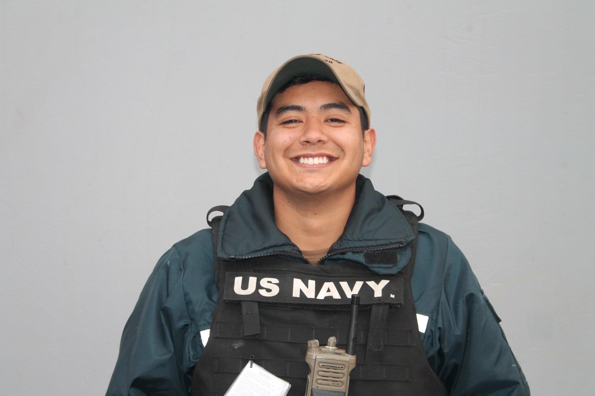

Previous Employment
US Navy Gunners-Mate Second Class (CG-65)
Vertical Launching System Co-Lead Technician-- Feb 2019 - Jun 2022
Logistics and Diagnostic Supervisor
- • First-hand experience with electrical and mechanical systems reparations
- • Immediate involvement in logistics requisition and handling
- • Supervision over ship electrical safety
US Navy Gunners-Mate Third Class (CG-70)
Workshop Lead Armourer (CG-70)-- Feb 2016 - Feb 2019
Mechanical Systems Technician
- • Over 250 man-hours on correcting discrepancies on mechanical systems
- • Direct Handling on an overhaul of over 159,000 units.
- • Successfully restored and maintained all Mechanical systems daily ensuring a 100% success rate on all certifications.
- • Successfully held over 60 training's for his peers and was the instructor responsible for the high-level knowledge and overall comprehension of the systems and mission.
Fiesta Mart, Inc
Service Cashier-- Feb 2015 - Aug 2015
Was responsible for processing cash, debit, credit and check transactions using a point-of-sale system in a food mart environment.
Duties include:
- •Balancing the cash register
- •Recording purchases
- •Processing returns
- -•Interacting with customers
Abercrombie & Fitch Co.
Stock Associate-- Sep 2014 - Feb 2015
Worked as a flexible associate with responsibilities consisting of:
- •Work consisted of restocking merchandise
- •Face to face interactions with customers
- •Cashiering and working in a team setting.